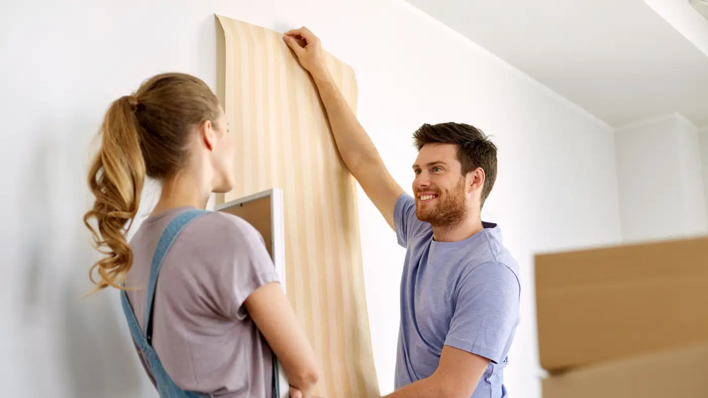
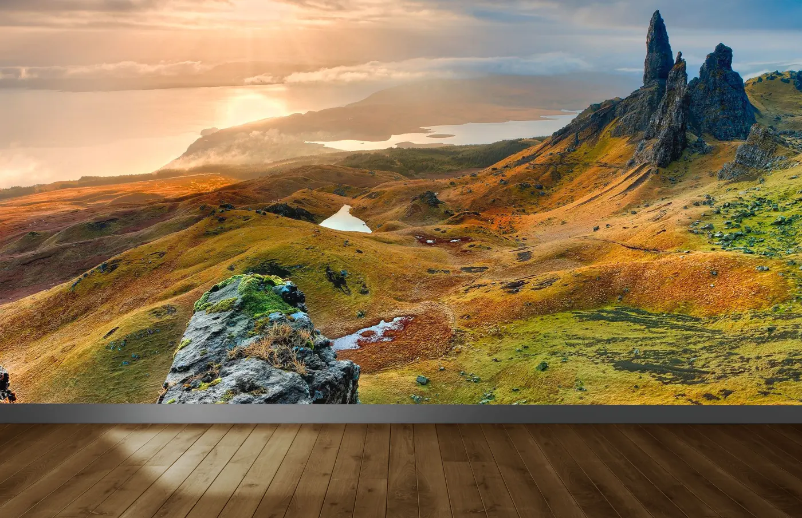
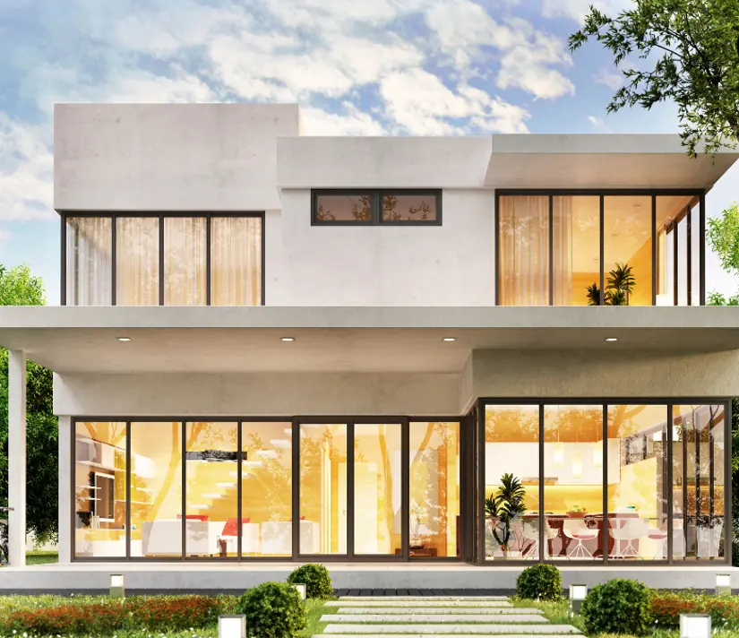

Behangen, zo begin je eraan!
Van plan om te behangen? Veel mensen zien ertegen op, want er komt toch één en ander bij kijken, zoals de juiste producten en techniek. Wil je het toch zelf proberen? Lees dan even onze tips en tricks en leer behangen als een pro!


Voorkom veel gemaakte fouten
Behangen loopt vaak al van bij het begin verkeerd doordat de verkeerde behanglijm wordt gebruikt. Gebruik geen restjes die je nog hebt en zorg ervoor dat je de juiste lijm in huis haalt voor het type behangpapier of -vlies dat je wenst te plaatsen. Waarom? Door de verkeerde behanglijm te gebruiken, kan het wel eens gebeuren dat je het behangpapier nooit meer goed van de muren kunt halen of omgekeerd, dat het er gewoon af valt. Blazen in het behangpapier kunnen ook voorkomen worden door de verkeerde lijm. Vraag advies in de speciaalzaak.
Afhankelijk van het type behang, moet je in sommige gevallen het behang inlijmen en in andere gevallen de muur. Vraag hierover ook advies in de winkel. Hoewel het op de verpakking staat aangeduid met pictogrammen, is het niet altijd even duidelijk of leesbaar.
Vergeet ook zeker niet je muren eerst te behandelen met een primer die de zuigkracht van de muur wegneemt. Doe je dat niet, dan trekt de lijm zeer sterk in de onbehandelde muur en krijg je je behangpapier misschien wel nooit meer van de muur of valt het er vanzelf weer af.
Dit heb je nodig om te behangen
Om te behangen heb je best veel materiaal nodig. We raden je aan om niet de goedkoopste materialen te kopen, maar te kiezen voor kwaliteit. Wat heb je nodig?
- Behangborstel
- Behangersrolletje
- Afsteekmes
- Behangstripper of afstoomapparaat
- Breekmes
- Papborstel
- Schaar
- Plaktafel
- Waterpas
- Trapladder
In 3 stappen behangen
We overlopen nog even de 3 stappen om te behangen. Op YouTube kan je tal van filmpjes vinden die je tonen hoe je elke stap goed uitvoert.
- Stap 1: bereid de wanden voor
Maak de ruimte leeg en bedek vloeren en meubels met plastic zeilen. Meet de te behangen wanden op en haal voldoende behangpapier in huis. Haal het oude behang van de muur, eventueel met een stoomapparaat om het behang los te krijgen. Verwijder ook alle schroeven, haken en spijkers en vul beschadigingen of gaten op met een vulmiddel.
- Stap 2: Snij het behang op maat en lijm in
Snij de banen op kamerhoogte en leg het behangpapier omgekeerd op de plaktafel. Lijm volgens de handleiding. Ofwel lijm je de muur in, ofwel het behangpapier. Indien je het papier moet inlijmen, laat de lijm dan enkele minuten inweken.
- Stap 3: begin met behangen
Waar begin je best met behangen? De hoek die je meteen ziet als je de kamer binnenkomt, is vaak de beste plek om te starten. Voorzie een loodlijn na 50cm, de breedte van de rol, om de eerste baan tegen te bevestigen, startend van in de hoek. Doe wat online research naar hoe je behang goed in de hoek kunt bevestigen en het behang overal naadloos laat aansluiten.
Een mooi behangresultaat begint bij een perfect voorbereide ondergrond. Oneffenheden, scheuren of oude afwerkingslagen kunnen het eindresultaat sterk beïnvloeden. Wilt u zeker zijn van een strakke en duurzame afwerking? Tijdens een vrijblijvend plaatsbezoek adviseren we u graag over de mogelijkheden. Ontdek meer over onze binnenschilderwerken.
Lees ook

Je bakstenen muur schilderen? Het kan!
Een bakstenen binnen- of buitenmuur kan je eenvoudig schilderen, mits de juiste voorbereidingen en kwaliteitsvol…
Lees meer
Naadloos fotobehang is hip en trendy
De sfeer in huis of bedrijfspand volledig naar een hoger en stijlvoller niveau tillen? Kies dan voor naadloos fotobehang!
Lees meer
Aluminium schrijnwerk schilderen, kan dat?
Kan je aluminium schrijnwerk schilderen en hoe begin je eraan? Ja, het kan zeker! SDAD geeft je tips en professionele…
Lees meerEen mooi resultaat begint met een goed gesprek.
Tijdens een vrijblijvend plaatsbezoek luisteren we naar uw wensen, geven we professioneel advies en bekijken we samen de mogelijkheden voor uw schilderwerken of interieurafwerking.